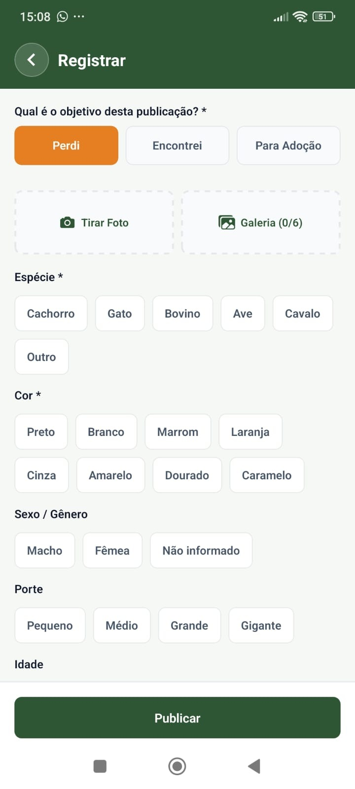
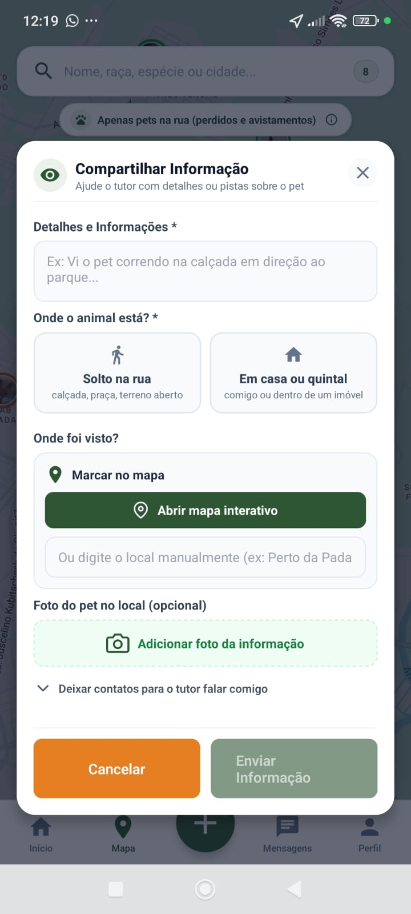
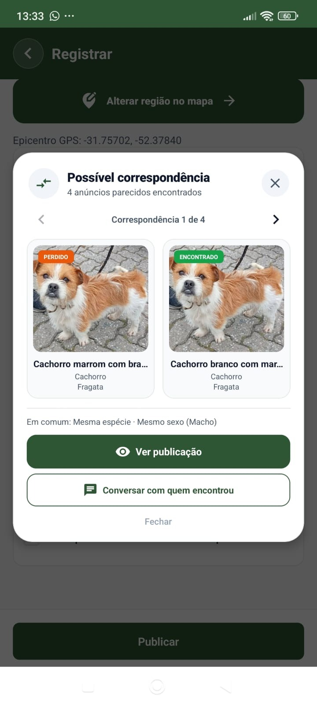
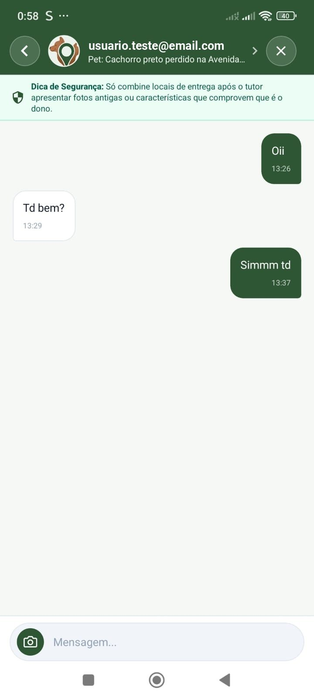
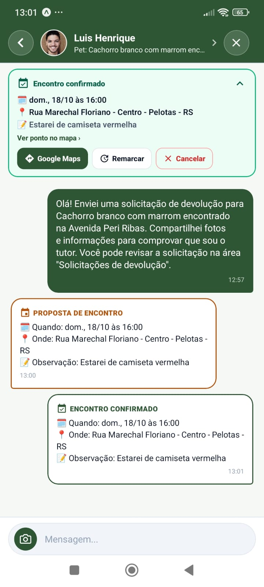

Perdeu ou encontrou um animal? Avise quem está perto.
No WeFIND, a publicação fica no mapa, recebe avistamentos da vizinhança e é comparada com anúncios parecidos. Tudo no mesmo lugar, sem expor o seu telefone.
Versão 2.5, gratuita. O arquivo é instalado direto, fora da Play Store.
Do sumiço ao reencontro
É assim que uma busca anda dentro do aplicativo.
-

Publique o caso
Informe espécie, porte, cor e outras características, adicione até seis fotos e marque no mapa onde o animal sumiu ou foi encontrado. Se quiser, ofereça uma recompensa.
-

A vizinhança avisa onde viu
Quem cruzar com o animal registra um avistamento com local, horário, descrição e foto. O autor da publicação recebe o aviso na hora.
-

O app sugere animais parecidos
O WeFIND compara anúncios de perdidos e encontrados pela espécie, pelas características e pela distância, e mostra os mais prováveis. Quem já tinha publicado recebe o aviso no app, no celular e, se autorizar, também no WhatsApp; quem acabou de publicar vê as sugestões na hora. A confirmação fica sempre com as pessoas.
-

Converse sem expor seu número
O contato entre quem procura e quem encontrou acontece em um chat privado, com dica de segurança e envio de fotos.
-

Comprove que o animal é seu
Em animais encontrados, o endereço residencial fica protegido. O tutor envia fotos ou documentos para comprovar que o animal é seu; depois, as pessoas combinam pelo chat a devolução em um local público.
E mais
- Cartaz com QR code
- Gere a imagem para imprimir ou postar, nos formatos A4, stories e feed.
- Mais perto primeiro
- O mural mostra primeiro os animais mais perto de você. Nos filtros, dá para escolher o raio, a espécie e ordenar pelos mais recentes.
- Avisos no app e no WhatsApp
- Avistamentos, mensagens, possíveis correspondências e lembretes de renovação chegam na central do app. Se você autorizar, também chegam pelo WhatsApp, e dá para desligar nas configurações.
- Denúncias e moderação
- Conteúdo suspeito pode ser denunciado e é analisado pela administração.
Como instalar
O WeFIND ainda não está na Play Store. Por isso o Android pede uma confirmação a mais.
- Baixe o APK pelo botão desta página.
- Abra o arquivo na pasta Downloads do celular.
- Permita a instalação se o Android pedir: ative “Permitir desta fonte”.
- Confirme no Play Protect e conceda a permissão de localização para usar o mapa.